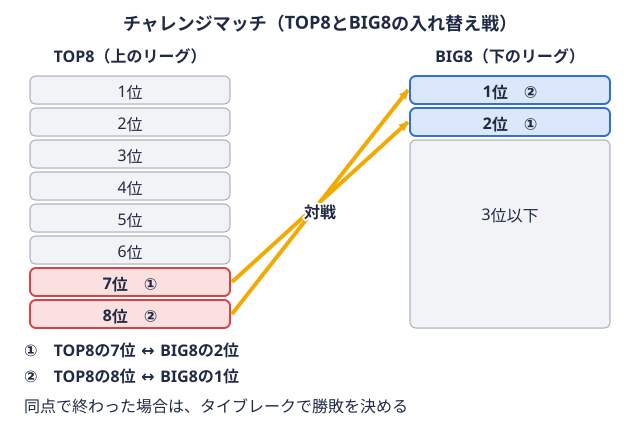
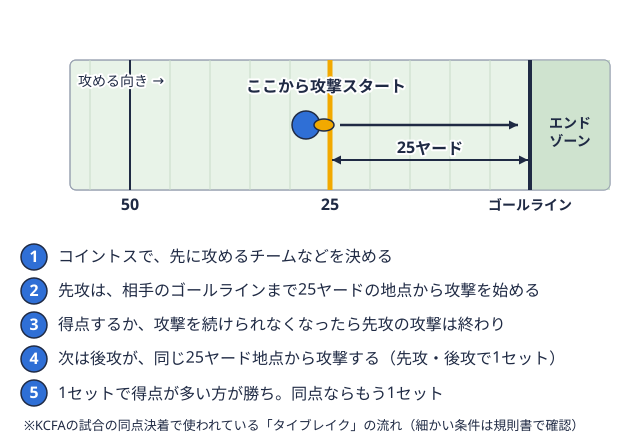
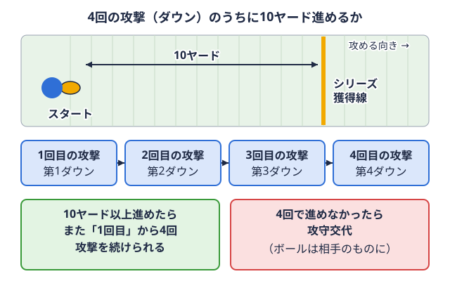

観戦ガイド 2026-09-14
関東大学アメフト順位表2026｜TOP8最終順位と勝ち点・順列の決まり方
はじめての方向け
関東大学アメフトの順位は、関東学生アメリカンフットボール連盟（KCFA）が公表する星取表リーグ戦の全チームの勝敗を、対戦相手ごとに○と●で表にしたもの。用語辞典で見るの勝ち点リーグ戦の順位を決める点数。関東学生リーグでは、勝ち3点・引き分け1点・負け0点。用語辞典で見るで決まります。最新の順位は本サイトのTOP8 順位表とBIG8 順位表で毎日確認でき、この記事では星取表の列の意味と順位の決まり方を整理します。2026年度のTOP8は11月15日の最終節で全日程を終え、KCFAの星取表では順位・順列が全校分記入されています（2026年11月17日確認）。
先に要点をまとめると、次の4つです。
- 2026年度TOP8の最終順位：1位法政大学（7勝0敗）、2位立教大学（6勝1敗）、3位早稲田大学（4勝3敗）までが全日本大学選手権へ進みます
- 勝ち点：勝ち3点・引き分け1点・負け0点で計算し、合計の多いチームが上位になります
- 同じ勝ち点で並んだとき：「順列」で決まります。2026年度は早稲田・明治・中央が勝ち点12で並び、当該校間の得失点差で3〜5位が決まりました
- シーズン中は順位欄が空欄：最終節前は順位・順列が記入されず、終了後に記入されます（2026年度は11月14日朝時点で法政大学のみ記入されていました）
2026年度TOP8の最終順位（KCFA星取表）
| 順列 | 校名 | 勝・敗 | 勝ち点 | 順位 | 進出先 |
|---|---|---|---|---|---|
| 1 | 法政大学 | 7-0 | 21 | 1 | 全日本大学選手権 |
| 2 | 立教大学 | 6-1 | 18 | 2 | 全日本大学選手権 |
| 3 | 早稲田大学 | 4-3 | 12 | 3 | 全日本大学選手権 |
| 4 | 明治大学 | 4-3 | 12 | 3 | — |
| 5 | 中央大学 | 4-3 | 12 | 3 | — |
| 6 | 慶應義塾大学 | 1-6 | 3 | 6 | — |
| 7 | 東京大学 | 1-6 | 3 | 6 | BIG8とのチャレンジマッチ上位リーグの下位チームと、下位リーグの上位チームが戦う、リーグの入れ替えをかけた試合。  用語辞典で見る |
| 8 | 日本体育大学 | 1-6 | 3 | 6 | BIG8とのチャレンジマッチ |
出典：KCFA｜星取表（2026年11月17日確認）。進出先は同ページの注記「1〜3位は全日本大学選手権に出場」「7、8位は1部BIG8とのチャレンジマッチへ」による。
順位が3のチームが3校、6のチームが3校あり、「順位」だけでは並びが決まりません。そこで「順列」を見ることになります。本サイトの順位表はTOP8 順位表で確認できます。
関東学生アメフトの順位表はどこで見られるか
関東学生アメフトリーグの順位表を探してKCFA公式サイトや本サイトにたどり着いても、並んでいる数字の意味が分からず読み違えてしまう場合があります。「順位」と「順列」という似た名前の列があったり、シーズン途中は順位欄が空欄になっていたりと、見慣れないと戸惑いやすい作りになっているためです。
一次情報は、関東学生アメリカンフットボール連盟（KCFA）が公開する星取表です。列は「勝・敗」「勝ち点」「順位」「順列」の4つで、各セルには自チームの得点・勝敗記号（○●）・相手の得点が記録されています。本サイトはこの星取表のうち、TOP8とBIG8の2リーグに絞って読みやすく整形しています。なお本サイトが扱うのはKCFAが運営するTOP8・BIG8のみで、関西学生連盟、関東2部以下のリーグ、医科歯科リーグ、7人制は対象外です。
順位表の列は何を表しているか
KCFAの星取表と本サイトの順位表では、表示する列の数が異なります。対応関係は次のとおりです。
| KCFA星取表の列 | 本サイト順位表の列 | 内容 |
|---|---|---|
| 勝・敗 | 勝-敗 | そのシーズンの勝敗数 |
| 勝ち点 | 勝ち点 | 勝ち3点・引き分け1点・負け0点で計算した合計点 |
| （対応なし） | 試合 | 消化試合数 |
| 順位 | 順位 | 勝ち点にもとづく順位。KCFAが未公表の間は「—」表示 |
| 順列 | （対応なし） | 同勝ち点チーム内の最終的な並び。本サイトの順位表には列を設けていません |
| （対応なし） | 得失点差 | KCFA非公表・本サイト編集部が試合結果から集計した参考値 |
KCFA星取表に得失点差の列はなく、本サイトの得失点差は編集部が公表済みの試合結果から独自集計した参考値です。この点は後述する「順列」の判定基準と関わるため、以降で詳しく説明します。
勝ち点は勝ち3点・引き分け1点・負け0点
KCFAの『競技運営細則』（順位順列決定方法）では、総当たり制の順位は勝ち点制で決めると定められています。勝ちを3点、引き分けを1点、負けを0点として合計し、勝ち点の多いチームを上位とする仕組みです。一方のチームが棄権した場合は相手チームを不戦勝として勝ち点3を与え、両校ともに試合ができない場合は両校とも勝ち点0となります。
ただし、実際の星取表で引き分けの勝ち点1が付くケースは見かけにくいのが実情です。星取表には引き分けという区分自体がなく、スコアが同点で終わった試合もタイブレーク同点で終わった試合に勝敗をつける延長戦。決まった地点から両チームが1回ずつ攻撃する。 
「順位」と「順列」はどう違うのか
勝ち点が同じチームは「順位」列ではまとめて同じ順位になります。その中で最終的にどちらが上かを示すのが「順列」列です。つまり順位は勝ち点だけで機械的に決まる値で、順列はそこで並んだチームをさらに切り分けた値、という関係になります。
この違いが効いてくるのは、全日本大学選手権に進む3枠やチャレンジマッチに回る2枠のように、区切りの位置に複数校が同勝ち点で並んだ場合です。順位が同じでも順列が下なら、進出先が変わることがあります。2026年度のTOP8では早稲田・明治・中央の3校がいずれも順位3、慶應・東京・日本体育の3校がいずれも順位6で、順列はそれぞれ3・4・5、6・7・8と記録されています。KCFAの注記では、どちらも当該校間の得失点差で決まったとされています。たとえば3位の早稲田大学は全日本大学選手権へ進み、同じ勝ち点12の明治大学・中央大学は進めません。6〜8位でも、順列7・8の東京大学・日本体育大学がチャレンジマッチに回ります。
過去の例では、KCFAの星取表を見ると、2023年度TOP8では法政大学と立教大学がともに「順位」1位で、「順列」は法政大学が1、立教大学が2と記録されています。
順列は6つの手順で決まる
KCFAの順位順列決定方法によると、勝ち点が等しいチームの順列は、次の順序で決定されます。
- 勝ち数が多いチームを上位とする
- 当該校間に限っての勝ち点が多いチームを順列で上とする
- 不戦敗は順列で下とする
- 1〜3を繰り返しても複数校が同順列の場合、当該校間に限っての得失点差の大きいチームを順列で上とする（タイブレークでの得点は、この得失点差には含めません）
- 得失点差が2チーム同じ場合、当該校間の対戦結果によって順列を決定する
- 上記によって順列が決定しない場合、当該校間の抽選によって順列を決定する
順列の得失点差は「当該校間に限った」もの
注意したいのは、手順4の「得失点差」がリーグ全体の得失点差ではなく「当該校間に限っての得失点差」だという点です。同じ勝ち点で並んだチーム同士の対戦だけを取り出した値であり、シーズン全試合を合算した値ではありません。
一方、本サイトの順位表の得失点差は、KCFA非公表のためシーズン全試合をもとに編集部が独自集計したリーグ全体の参考値です。母数がまったく異なるため、本サイトの得失点差の大小から「この2校ならこちらが順列で上になるはずだ」と推測することはできません。順列の正式な決定はKCFAが行うものであり、本サイトの得失点差は参考値としてご利用ください。
また、タイブレークでの得点は順列決定の得失点差に含まれません。2026年度の星取表には、明治大学―法政大学がタイブレークで明治3―11法政、立教大学―慶應義塾大学がタイブレークで立教15―13慶應と注記され、いずれもタイブレークでの得点は順列決定の得失点差に含まないと明記されています。タイブレークの仕組みはアメフトのタイブレークのルールで解説しています。
順位・順列の欄はシーズン終了後に記入される
2026年11月14日朝の時点（本サイトの取込データ）では、TOP8は各校が6試合を消化していましたが、「順位」「順列」が記入されていたのは6勝0敗の法政大学（勝ち点18）だけで、ほかの7校は空欄でした。最終節（11月14日・15日）後の11月17日確認時点では、全8校の順位・順列が記入されていました。掲載のタイミングについて星取表のページ上に説明はありませんが、少なくとも2026年度は、シーズン中は空欄で、終了後に記入される表示でした。本サイトの順位表でも、KCFAが順位を公表していない間は「順位」列を「—」で表示しています。
シーズン中は、勝ち点の並びを手がかりに読むことになります。残り試合の結果で勝ち点の並びは変わっていくため、TOP8 日程・結果もあわせて確認すると変化を追いやすくなります。
TOP8とBIG8で順位表の形が違う
TOP8とBIG8では、順位表の作り自体が異なります。TOP8は8校総当たりを1枚の表で追える一方、BIG8はブロック制のため複数の表に分かれます。
TOP8は8校総当たりで1チーム7試合
2026年度のTOP8には東京大学、立教大学、法政大学、中央大学、明治大学、慶應義塾大学、早稲田大学、日本体育大学の8校が参加しています。8月27日（木）にアミノバイタルフィールドでの東京大学対立教大学戦で開幕し、第1節は8月27日〜30日のナイトゲーム、最終節は11月14日（土）・15日（日）で、全試合がアミノバイタルフィールドで開催されます。8校総当たりのため1チームあたりの試合数は7試合で、上位3チームが全日本大学選手権に進出します。
2026年度のBIG8は一次リーグと二次リーグに分かれる
2026年度のBIG8は、Aブロック（青山学院大学、駒澤大学、横浜国立大学、専修大学、一橋大学）とBブロック（桜美林大学、国士舘大学、明治学院大学、東海大学、日本大学）の2ブロック制です。一次リーグはブロック内総当たりで行われ、各ブロック上位3チームが二次上位リーグへ、下位2チームが二次下位リーグへ進み、一次リーグの勝ち点・勝敗・得失点はそのまま二次リーグに持ち越されます。
KCFA星取表の一次リーグは、Aブロックが専修大学・駒澤大学・青山学院大学、Bブロックが日本大学・明治学院大学・桜美林大学の上位3校が二次上位リーグへ進みました。なお下位側について、KCFAの2月18日発表では「二次下位リーグ」、星取表では「二次チャレンジリーグ」と表記されています。
上位リーグと下位リーグの間で最終順位が入れ替わることはなく、上位リーグの結果が最終1〜6位、下位リーグの結果が最終7〜10位として確定します。対戦相手も段階で異なり、上位リーグは一次リーグで別ブロックだったチームとのみ対戦する一方、下位リーグは一次リーグで同ブロックだったチームとも対戦します。
このためBIG8は、一次リーグ中はAブロック・Bブロックの2枚の表、二次リーグに入ると別区分の表に切り替わり、TOP8のように1枚の表を通年で追えるわけではありません。リーグの形自体もシーズンごとに変わり、TOP8は2023年度が7チーム制・2024年度以降は8チーム制、BIG8も2024・2025年度は単一ブロックの総当たりでした。最新の区分はBIG8 順位表、日々の結果はBIG8 日程・結果で確認できます。
二次リーグの途中経過は本サイトのBIG8 順位表で確認できます。二次リーグの残り試合は11月21日・22日と12月5日・6日に組まれています。
順位表が決めるもの
順位表の上と下には、それぞれ全国大会への出場権と入れ替えがかかっています。
TOP8では1〜3位が全日本大学選手権（甲子園ボウル出場校の決め方｜関東TOP8の代表3校はこう決まる）に出場し、7・8位はBIG8とのチャレンジマッチ（大学アメフト チャレンジマッチ結果まとめ｜TOP8とBIG8の入れ替え戦）に回ります。2026年度は東京大学（7位）・日本体育大学（8位）がチャレンジマッチに回ります。BIG8では最終順位1・2位がTOP8とのチャレンジマッチに進出し、5〜8位は2部との入れ替え戦、9・10位は2部へ自動降格となります。本サイトが扱うのはTOP8・BIG8までのため、2部に降格したチームのその後は追跡できません。
昇格・降格やチャレンジマッチの仕組み自体は大学アメフトTOP8とは｜仕組み・出場校・BIG8との違い、シーズン全体の流れは関東大学アメフトの1年間｜春季オープン戦から甲子園ボウルまでの流れをご覧ください。
順位表を見るときのチェックリスト
- まずは勝ち点で見る。勝ち3点・引き分け1点・負け0点で計算した勝ち点が順位の基本です。
- 同勝ち点は順列の手順を確認する。勝ち数→当該校間の勝ち点→不戦敗の扱い→当該校間の得失点差の順で決まり、単純な得失点差の比較だけでは判断できません。
- 本サイトの得失点差は参考値として見る。KCFA非公表のため編集部が独自集計したリーグ全体の値で、「当該校間に限った得失点差」とは別物です。
- 消化試合数を揃えて比べる。シーズン途中は各校の試合数が異なる場合があり、勝ち点だけでは実力差を見誤ることがあります。
- BIG8はブロックと段階を確認する。一次リーグか二次上位・二次下位リーグかで対戦相手のルールが変わります。
- 同点でもタイブレークで勝敗が付いている。スコアが並んでいても引き分けではなく、勝敗記号のほうが正しい記録です。
1シーズンの順位表では見えない複数シーズンの通算成績はTOP8 記録室に、その数字をもとにした強豪校の整理は大学アメフトの強豪はどこ｜関東TOP8を通算成績データで見るにまとめています。
よくある質問
Q. 関東大学アメフトの最新順位はどこで見られますか？
本サイトのTOP8 順位表とBIG8 順位表で、勝敗・勝ち点を毎日更新しています。順位・順列の正式な記録はKCFAの星取表です。2026年度TOP8は1位法政大学、2位立教大学、3位早稲田大学で全日程を終えています（KCFA星取表）。試合の日程は大学アメフトの日程を今週末分まで確認する方法にまとめています。
Q. 星取表の「順位」欄が空欄なのはなぜですか？
KCFAの星取表では、シーズン中は順位・順列が記入されないまま推移し、終了後に記入されます。2026年11月14日朝時点のTOP8でも法政大学を除く7校が空欄でしたが、最終節後の11月17日確認時点では全8校が記入されていました。理由は星取表のページ上に書かれていないため、シーズン中は勝ち点で並びを確認してください。
Q. 2026年度に勝ち点が並んだチームはどう決まりましたか？
3〜5位（早稲田・明治・中央、勝ち点12）と6〜8位（慶應・東京・日本体育、勝ち点3）は、KCFAの注記によると、いずれも当該校間の得失点差で順列が決まりました。得失点差の具体的な数値はKCFAが公表していないため、ここでは記載しません。
Q. 勝ち点が同じチームは、どう順位が決まりますか？
KCFAの競技運営細則では、勝ち数が多いチーム、当該校間の勝ち点が多いチーム、の順に上位とし、不戦敗は下位、それでも決まらなければ当該校間の得失点差、対戦結果、抽選の順で順列を決めます。詳しくは本記事の「順列は6つの手順で決まる」をご覧ください。
Q. TOP8の下位2校とBIG8の上位校はどうなりますか？
2026年度の運営細則では、TOP8の7位がBIG8の2位と、8位がBIG8の1位とチャレンジマッチを行います。TOP8の1〜3位は全日本大学選手権に進みます。通算の勝敗は関東学生アメフトの通算勝率ランキングで見られます。
Q. 初めて観戦するのですが、試合の見方も知りたいです。
試合時間やダウン攻撃1回分のこと。ボールが動き出してから止まるまでが1回で、攻撃側は4回まで続けて行える。 
まとめ
- KCFA星取表の列は「勝・敗／勝ち点／順位／順列」の4列で、本サイトはこれに試合数と参考値の得失点差を加えた6列で表示しています
- 勝ち点は勝ち3点・引き分け1点・負け0点で計算しますが、星取表に引き分けの区分はなく同点はタイブレークで決着します
- 同勝ち点の順列は、勝ち数→当該校間の勝ち点→不戦敗の扱い→当該校間の得失点差→当該校間の対戦結果→抽選、の6段階で決まります
- 本サイトの得失点差はリーグ全体の参考値で、順列判定に使う「当該校間に限った得失点差」とは別物のため、そこから順列を推測することはできません
- 2026年度TOP8は法政・立教・早稲田が上位3校。勝ち点12の3校、勝ち点3の3校がいずれも当該校間の得失点差で順列が決まりました
- シーズン中は順位・順列の欄が空欄で推移し、終了後に記入されます
参考リンク
本記事の内容は2026年11月17日時点のKCFA公表情報にもとづいています。最新の順位・結果はKCFA公式サイトと本サイトの順位表であわせてご確認ください。
この部活・競技を応援したい方へ
協賛・応援はこちらから。
取材してほしい部活を募集中
あなたの部活・チームを取材してほしい方はこちらから。
部活を続けながら、就活も進めたい方へ
体育会の学生のための就活相談です。無料で、メールアドレス・学年・所属の入力だけで始められます。